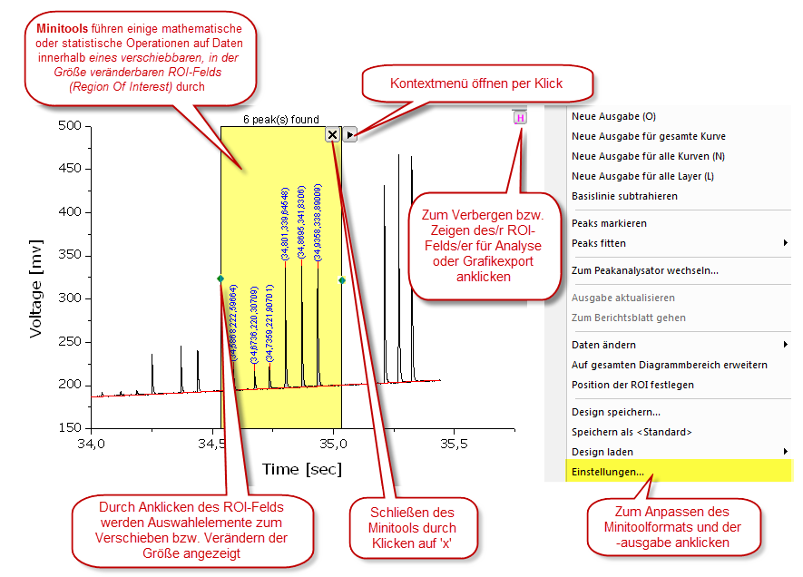
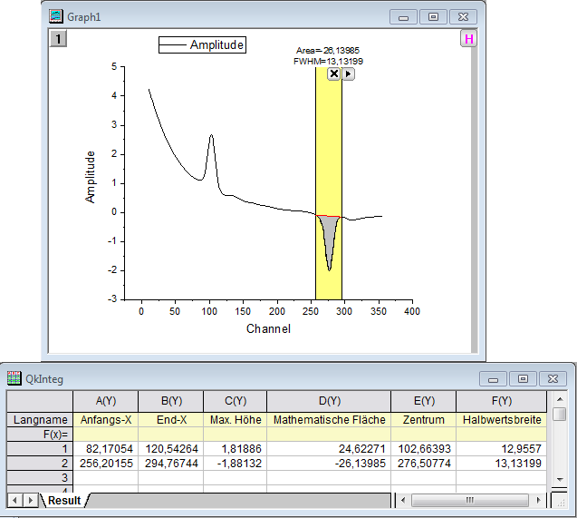
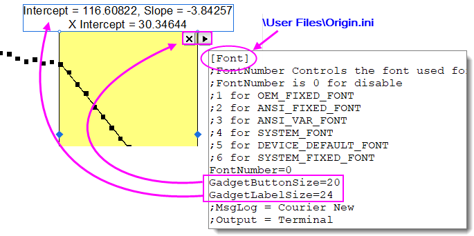

Minitools
Gadgets
Mit Minitools können untersuchende Analysen für gezeichnete Daten in einem Diagramm schnell und einfach durchgeführt werden. Das Konzept ist einfach: Während jedes Minitool einen bestimmten Zweck hat, besteht die einheitliche Vorgehensweise darin, dass jedes eine Reihe von benutzerdefinierbaren Analyseoperationen auf einen Bereich gezeichneter Daten anwendet, der durch ein verschiebbares, in der Größe veränderbares grafisches Auswahlfeld, genannt ROI-Objekt (Region of Interest), definiert wird.
Sie können mit dem Cursor jederzeit an dem ROI-Objekt ziehen, um es zu verändern. Sie können dann ihre Analyseoptionen ändern und die Ergebnisse neu berechnen, indem Sie auf die Pfeilschaltfläche oben rechts klicken und eine der Menüoptionen wählen. Zugriff auf die Formatierungs- und Analyseoptionen der Minitools haben Sie im Kontextmenü über Einstellungen. Verwenden Sie das Feld Dialogdesign, um eine Reihe von Minitooleinstellungen in einer Designdatei zu speichern.
In einem Diagramm werden mehrere Minitools unterstützt. Sie können ROI-Objekte durch die Vergabe unterschiedlicher Farben unterscheiden. Klicken Sie auf das gewünschte Objekt, um es auszuwählen. Wenn ein ROI-Objekt ausgewählt ist, können Sie auch die Tab-Taste verwenden, um zwischen den ROI-Objekten zu wechseln.
Minitools Differenziation Integration Interpolation Peakanalyse Flankenanalyse Statistik 2D-Integration KonturprofilBildprofil Region of Interest (ROI) Ableitungen, Zeichnung FFT Kurvenanpassung Sigmoidaler Fit Deskriptive Statistik Koordinatenwerte, Lesen/Anmerkungen
- 
 | Origin 2016 führte Add-On ein, die als Apps bezeichnet werden. Seit der Einführung wurden viele neue Hilfsmittel zur Untersuchung und Analyse zu OriginLabs Dateiaustausch hinzugefügt. Es werden fortwährend weitere Hilfsmittel veröffentlicht. Bitte besuchen Sie die Seite Dateiaustausch, um sich die verfügbaren Hilfsmittel anzusehen. |
Origin-Minitools
Das Menü Minitools ist verfügbar, wenn ein Grafikfenster aktiv ist. Origin stellt 14 Minitools zur Verfügung.
| Minitool Clustermanipulation |
Sehen Sie sich Statistiken zu Punkten innerhalb und außerhalb eines grafisch definierten ROI-Felds an (rechteckig, kreisförmig/elliptisch oder beliebig geformt).  |
| Minitool Differenzieren |
Berechnen und zeichnen Sie die Ableitung n-ter Ordnung der ausgewählten Daten. |
| Minitool FFT |
Sehen Sie sich das FFT-Spektrum der ausgewählten Daten an. |
| Minitool Integration |
Berechnen Sie die Fläche unter der Kurve oder zwischen den Kurven. |
| Minitool 2D-Integration |
Berechnen Sie die 2D-Integration für ein Kontur- oder Bilddiagramm, das aus Matrix- oder XYZ-Arbeitsblattdaten erstellt wurde. |
| Minitool Interpolation |
Führen Sie eine lineare, Spline-, B-Spline- oder Akima-Spline-Interpolation der ausgewählten Daten durch. |
| Minitool Kurvenschnittpunkte |
Berechnen Sie die Kurvenschnittpunkte von zwei oder mehr Datenzeichnungen. |
| Minitool Quick Fit |
Führen Sie eine lineare, polynomielle oder nichtlineare Anpassung der ausgewählten Daten durch. |
| Minitool Peakanalyse |
Suchen Sie nach Peaks und berechnen Sie die Fläche und andere Peakeigenschaften. |
| Minitool Sigmoidaler Quick Fit |
Führen Sie einen sigmoidalen Fit der ausgewählten Daten aus. |
| Minitool Flankenanalyse |
Analysieren Sie die Anstiegs-/Abfallszeiten für ein stufenförmiges Signal. |
| Minitool Statistik |
Berechnen und zeigen Sie die einfache deskriptive Statistik der ausgewählten Daten des Diagramms an. |
| Minitool Vertikaler Cursor |
Lesen Sie die Koordinatenwerte ab und beschriften Sie Datenzeichnungen über mehrere Diagrammlayer, die die gleiche X-Achse teilen. |
| Bild-/Konturprofil |
Analysieren Sie das Bild oder die Kontur aus Matrixdaten und erzeugen Sie Profile. |
| Minitool Kurve übersetzen |
Ziehen Sie eine Kurve in vertikaler oder horizontaler Richtung und berichtigen Sie dadurch die Quelldaten. |
| Hinweis: Weitere Informationen zu diesen Minitools erfahren Sie unter: Hilfe: Origin: Origin-Hilfe> Minitools Hilfe: Origin: Origin-Hilfe > Matrixmappen, Matrixblätter und Matrixobjekte > Anzeige und Profil von Matrixdaten
|
 |
Tutorial: Mit dem Minitool Integration Ergebnisse in einem Arbeitsblatt ausgeben
- Importieren Sie die Datei Peaks on Exponential Baseline.dat, die sich im Unterordner Samples\Spectroscopy des Origin-Installationsordners befindet.
- Erstellen Sie ein Liniendiagramm der Daten in Spalte B.
- Gehen Sie bei aktivem Diagramm zum Hauptmenü und klicken Sie auf Minitools: Integration.
- Klicken Sie in dem aufgerufenen Dialog auf die Registerkarte Basislinie und wählen Sie die Option Gerade Linie in der Auswahlliste Modus.
- Wechseln Sie zur Registerkarte Ausgabe und aktivieren Sie im Zweig Eigenschaften ausgeben in das Kontrollkästchen An Worksheet anhängen und deaktivieren Sie die anderen Kontrollkästchen.
- Erweitern Sie den Knoten Eigenschaften, wählen Sie die Option Kein in der Auswahlliste Datensatzidentifizierer und aktivieren Sie Anfang X und Ende X.
- Klicken Sie auf OK, um den Dialog zu schließen. Das rechteckige Objekt der grafischen Datenauswahl (ROI) wird zu dem Diagramm hinzugefügt.
- Verändern Sie die Größe der grafischen Datenauswahl (ROI) und verschieben Sie sie, so dass nur der erste Peak in der Datenzeichnung ausgewählt wird. Klicken Sie dann auf die Schaltfläche mit dem Pfeil
 , die sich oben rechts in der ROI befindet, und wählen Sie Neue Ausgabe oder drücken Sie auf Ihrer Tatstatur auf "O". Auf diese Weise werden die Parameter für den ersten Peak in ein Arbeitsblatt geschrieben. , die sich oben rechts in der ROI befindet, und wählen Sie Neue Ausgabe oder drücken Sie auf Ihrer Tatstatur auf "O". Auf diese Weise werden die Parameter für den ersten Peak in ein Arbeitsblatt geschrieben.
- Ziehen Sie an dem ROI-Objekt, um es über dem zweiten Peak zu positionieren, und wiederholen Sie den Schritt oben, um die Ausgabe für den zweiten Peak zu erzeugen.
- Klicken Sie erneut auf die Schaltfläche mit dem Pfeil und wählen Sie dieses Mal Zum Berichtblatt gehen. Ein Arbeitsblatt mit den Integrationsergebnissen wird geöffnet.
 |
Benutzerdefinierte Beschriftung für ROI-Feld
Origin unterstützt das benutzerdefinierte Beschriften des ROI-Felds für die Minitools Quick Fit und Statistik. Benutzerdefinierte Beschriftungen werden bewahrt und aktualisiert, wenn Sie eine neue Ausgabe auswählen. Sie können außerdem als Teil eines Dialogsdesigns gespeichert werden.

Benutzerdefinierte Beschriftung und Schaltflächengröße
Allgemeine Änderung der Schriftgröße von Beschriftungen und der Schaltflächengröße bei einem beliebigen Minitool
Um die Schriftgröße der Beschriftungen und Größe der Schaltflächen benutzerdefiniert anzupassen (beide Schaltflächen, zum Schließen und zum Ausklappen des Menüs):
- Öffnen Sie den Abschnitt \Anwenderdateien\Origin.ini und suchen Sie nach [Font].
- Fügen Sie zwei Zeilen zu diesem Abschnitt hinzu, wie im Bild unten gezeigt, und speichern Sie die Datei mit Ihren Ergänzungen dann.
- Jegliche neuen Minitools, die zum Fenster hinzugefügt wurden, sollten die neue Schrift- und Schaltflächengröße nun verwenden. Passen Sie nach Bedarf an.
- 
Minitool Quick Fit
- Wählen Sie ein Minitool im Menü Minitools: Quick Fit.
- Öffnen Sie den Dialog des Minitools (Hinweis: Wenn das ROI-Feld bereits hinzugefügt ist, klicken Sie auf die Menüschaltfläche und wählen Sie Einstellungen).
- Klicken Sie auf die Registerkarte ROI-Feld und aktivieren Sie Benutzerdefinierte Beschriftung.
- Erstellen Sie Ihre benutzerdefinierte Beschriftung mit Hilfe der Mischung (a) eines literalen Textes (b) Escape-Sequenzen (z. B. griechische Symbole oder hochgestellte Zeichen) und (c) benutzerdefinierte Variablen. Legen Sie Dezimalstellen etc. mit Origins benutzerdefinierten Formaten fest.
| Dialog Beschriftung |
Benutzerdefinierte Variable |
Beispiel |
| Reduziertes Chi-Quadrat |
chisqr |
Chi-Square \g(c)\+(2) = $(chisqr, .2) |
| R-Quadrat |
cod |
R-Quadrat r\+(2) = $(cod, .2) |
| Pearson r |
r |
r = $(r, .2) |
| Schnittpunkt mit der Y-Achse |
intercept |
Schnittpunkt mit Y = $(intercept, .2) |
| Steigung |
slope |
Steigung = $(slope, .2) |
| Schnittpunkt mit der X-Achse |
xintercept |
Schnittpunkt mit Y = $(xintercept, .2) |
Minitool Statistik
- Wählen Sie Minitools: Statistik: Dialog öffnen(Hinweis: Wenn das ROI-Feld bereits hinzugefügt ist, klicken Sie auf die Menüschaltfläche und wählen Sie Einstellungen).
- Klicken Sie auf die Registerkarte In grafischer Datenauswahl in der Mitte oben zeigen und aktivieren Sie Benutzerdefinierte Beschriftung.
- Erstellen Sie Ihre benutzerdefinierte Beschriftung mit Hilfe der Mischung (a) eines literalen Textes (b) Escape-Sequenzen (z. B. griechische Symbole oder hochgestellte Zeichen) und (c) benutzerdefinierte Variablen. Legen Sie Dezimalstellen etc. mit Origins benutzerdefinierten Formaten fest.
| Dialog Beschriftung |
Benutzerdefinierte Variable |
Beispiel |
| N |
n |
Anzahl = $(n) |
| Mittelwert |
Mittelwert |
\g(m) = $(mean, *4) |
| StAbw |
sd |
\g(s) = $(sd, .2) |
| Minimum |
min |
Min. = $(min, .2) |
| X bei Minimum |
xminy |
X-Min. = $(xminy, .2) |
| Maximum |
max |
Max. = $(max, .2) |
| X bei Maximum |
xmaxy |
X-Max. = $(xmaxy), .2) |
| Summe |
sum |
Summe = $(sum, .2) |
Weiterführende Themen